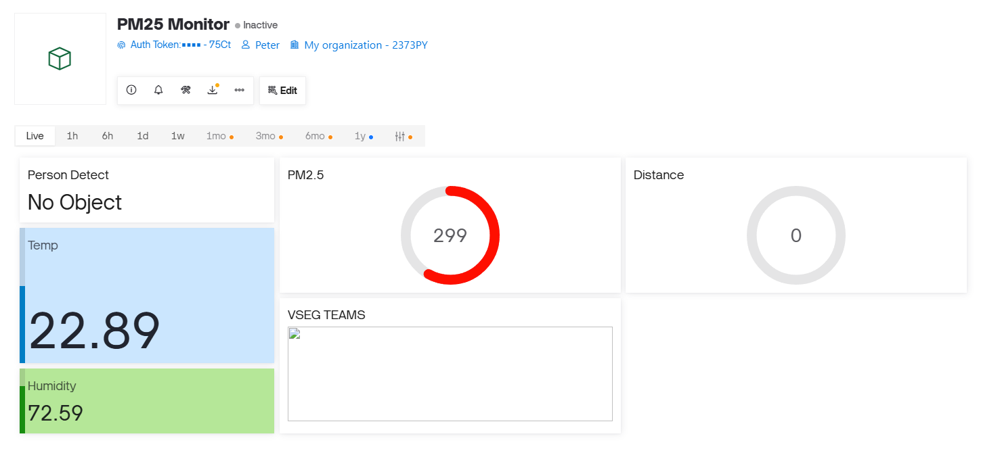
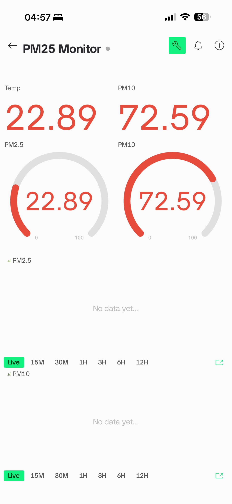
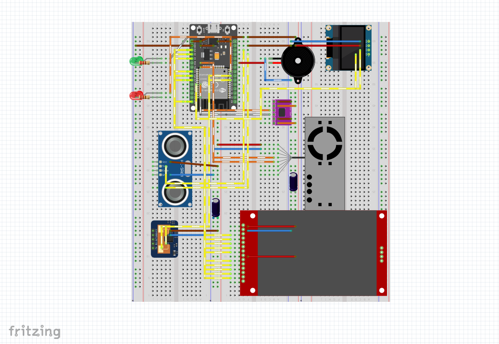
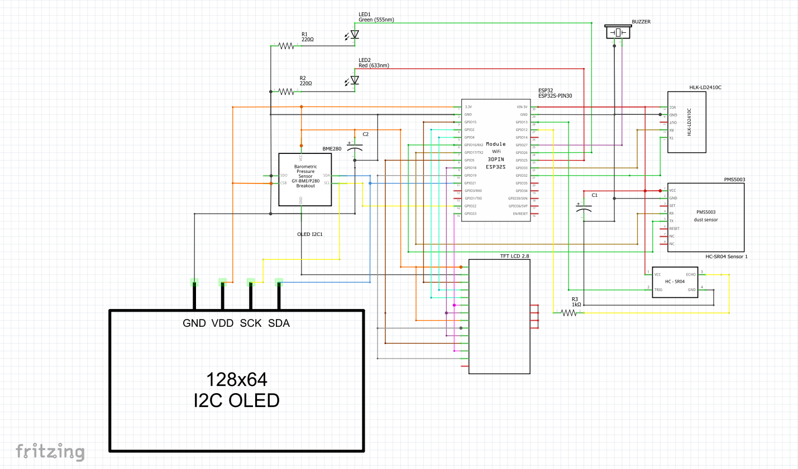

← กลับไปหน้าผลงานเด่น
IoT & Hardware
PM Project
โปรเจกต์ตรวจวัดคุณภาพอากาศและตรวจจับบุคคล แสดงผลแบบ Real-time ผ่านหน้าจอ TFT Touch Screen 2.8" และ OLED ผสานการทำงานของเซ็นเซอร์ PMS5003 และเรดาร์ HLK-LD2410C อย่างแม่นยำ
สิ่งที่ทำในโปรเจกต์
- ออกแบบและประกอบวงจรฮาร์ดแวร์ ผสานการทำงานของโมดูลและเซ็นเซอร์หลายชนิดเข้าด้วยกัน
- เขียนโค้ดภาษา C/C++ เพื่ออ่านค่าฝุ่นจาก PMS5003 และค่าการเคลื่อนไหวจากเรดาร์ HLK-LD2410C
- พัฒนาระบบแสดงผล (UI) บนอุปกรณ์ฮาร์ดแวร์ผ่านหน้าจอ TFT Touch Screen และจอ OLED 0.96"
- เชื่อมต่อระบบรับส่งข้อมูลผ่าน Wi-Fi เพื่อแสดงผลบนหน้า Web Dashboard (Blynk) แบบ Real-time
ลิงก์โค้ด
สามารถเข้าชมซอร์สโค้ดและรายละเอียดโครงสร้างไฟล์เพิ่มเติมได้ที่ GitHub
https://github.com/Phuwadon999/PM
 ต้นแบบอุปกรณ์ฮาร์ดแวร์จริง
ต้นแบบอุปกรณ์ฮาร์ดแวร์จริง

หน้า Dashboard ควบคุมและแสดงผล

การแสดงผลบนโทรศัพท์มือถือ

โครงสร้างวงจรภาพรวม (Fritzing)

รายละเอียดการเชื่อมต่อสายไฟ